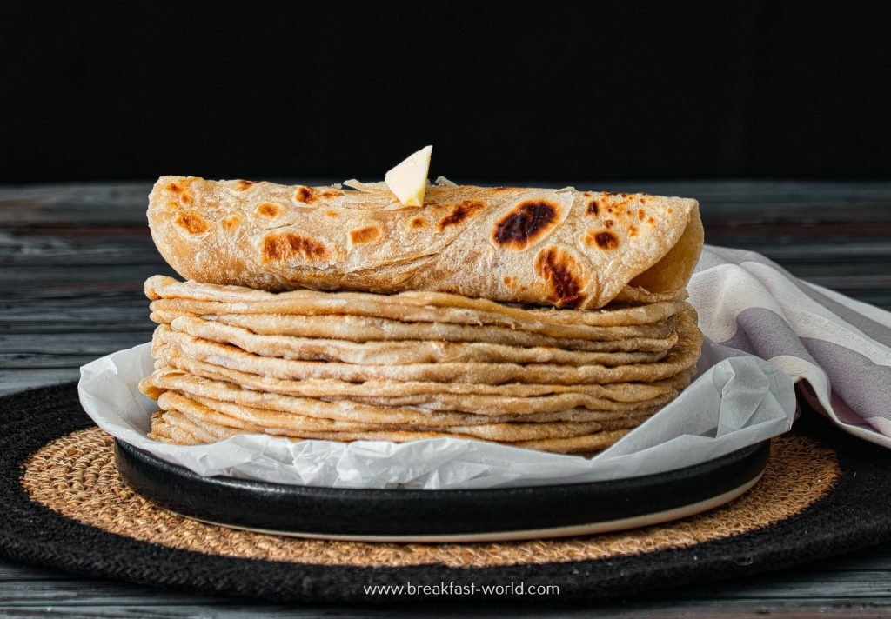

Chapati

Ingredients
- 2 cups all-purpose flour, sifted
- 1 teaspoon salt
- ¾ cup warm water, or as needed
- 1 teaspoon vegetable oil
- 2 teaspoons all-purpose flour, or as needed
- 1 tablespoon vegetable oil
Steps
- Mix 2 cups flour and salt together in a bowl. Slowly mix in enough water to make a thick dough. Mix in oil until combined.
- Knead dough on a cool surface for a few minutes, adding a few spoonfuls of flour. Return dough to the bowl, cover with a clean cloth, and let rest for 30 minutes.
- Preheat the oven to 200 degrees F (95 degrees C).
- Heat a pan over medium heat.
- Divide dough into orange-sized balls. Flatten into 6-inch circles.
- Fry in batches in the hot pan, turning once, until golden brown and spotted, 6 to 8 minutes. Repeat with remaining dough. Keep chapatis warm in the oven.